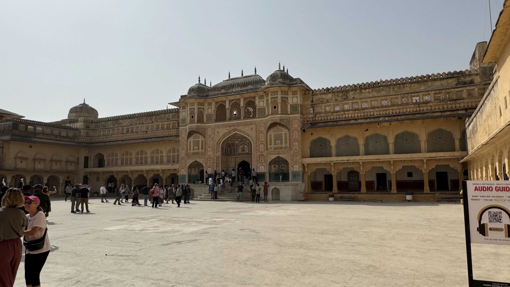
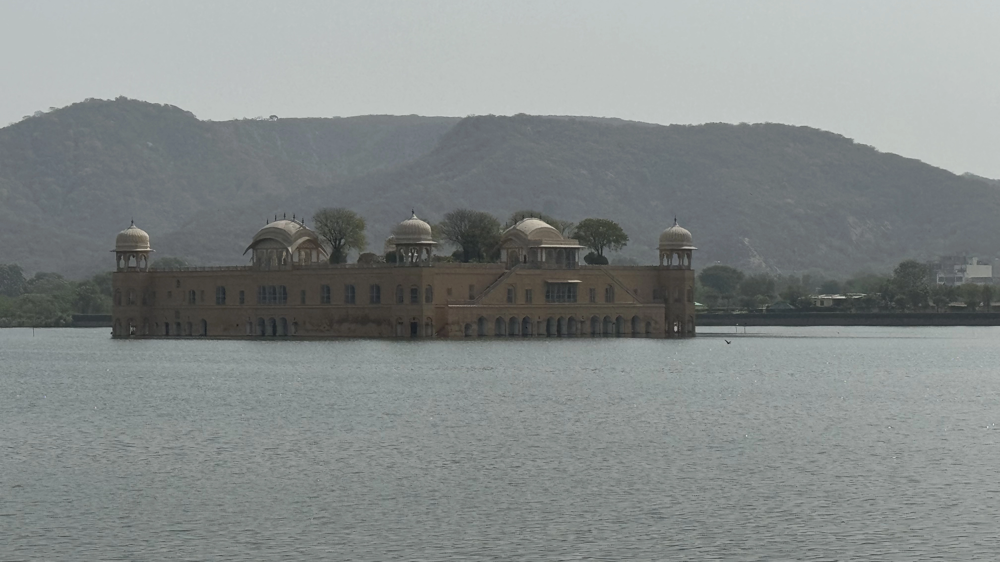

Découverte de Jaipur : La Ville Rose de l'Inde
Histoire

Fondée en 1727 par le Maharaja Sawai Jai Singh II, Jaipur est la capitale de l'État indien du Rajasthan. C'est l'une des premières villes planifiées de l'Inde, conçue selon les principes de l'architecture Vastu Shastra. Jai Singh II, un roi astronome et mathématicien, a fait appel à Vidyadhar Bhattacharya, un architecte bengali, pour concevoir la ville. Jaipur est souvent appelée la "Ville Rose" en raison de la couleur des bâtiments de sa vieille ville, repeints en rose pour accueillir le prince de Galles (plus tard roi Édouard VII) en 1876. Depuis sa fondation, Jaipur a été un centre culturel et commercial majeur dans la région.
Économie
L'économie de Jaipur est diversifiée, avec des secteurs clés incluant le tourisme, l'artisanat, les bijoux, les textiles et les technologies de l'information. Le tourisme est le principal moteur économique, attirant des millions de visiteurs chaque année grâce à ses palais majestueux, ses forts historiques et ses festivals colorés. Jaipur est également renommée pour ses bijoux, en particulier les pierres précieuses et semi-précieuses, et pour ses textiles, y compris les célèbres imprimés de block printing. L'artisanat local, comme les sculptures en pierre, les poteries et les marionnettes, contribue également de manière significative à l'économie.
Architecture
Jaipur est un trésor d'architecture rajput et moghole, avec des influences évidentes de l'architecture occidentale. La ville est structurée en une grille, avec de larges avenues et des palais somptueux. Le Palais de la Ville, situé au cœur de Jaipur, est un complexe de cours, de jardins et de bâtiments, reflétant un mélange harmonieux de styles architecturaux. Le Hawa Mahal, ou Palais des Vents, est un autre exemple emblématique, avec sa façade en nid d'abeille composée de 953 petites fenêtres. Le Jantar Mantar, un observatoire astronomique construit par Jai Singh II, est un autre site remarquable, présentant une collection de 19 instruments architecturaux pour observer les positions astronomiques. Jaipur est également entourée de forts imposants comme Amber Fort, Nahargarh Fort et Jaigarh Fort, chacun offrant des vues panoramiques et une plongée dans l'histoire royale de la région.
Tourisme

Jaipur est une destination touristique de premier plan, offrant une combinaison unique de patrimoine historique, de culture vibrante et de shopping exotique. Les visiteurs peuvent explorer des palais opulents, des forts majestueux et des temples anciens. La vieille ville, avec ses marchés animés comme Johari Bazaar et Bapu Bazaar, est idéale pour acheter des bijoux, des textiles et des souvenirs artisanaux. Les festivals de Jaipur, tels que le Festival des Éléphants et le Festival des Cerfs-volants, ajoutent une touche festive à l'expérience touristique. La cuisine locale, avec des plats comme le dal baati churma et les kachoris, est un régal pour les gourmets.
Vous souhaitez plus d'informations
N'hesitez à nous contacter pour plus de renseignements sur nos services, nous sommes à votre ecoute pour faire de ce voyage un moment inoubliable
Jaipur en Quelques Chiffres
- Population : Environ 3,1 millions d'habitants
- Superficie : 467 km²
- Altitude : 431 mètres au-dessus du niveau de la mer
- Fondation : 1727
- Climat : Semi-aride, avec des étés chauds et des hivers doux
- Langue officielle : Hindi, Rajasthani et Anglais
Les 10 Incontournables de Jaipur
- 1. Palais de la Ville (City Palace)
Un complexe de cours, jardins et bâtiments, combinant l'architecture rajput et moghole. - 2. Hawa Mahal (Palais des Vents)
Un palais en forme de couronne de Krishna, avec 953 petites fenêtres, construit en 1799. - 3. Amber Fort
Un fort majestueux situé sur une colline, construit en 1592 par Raja Man Singh.. - 4. Jantar Mantar
Un observatoire astronomique du 18ème siècle, avec des instruments monumentaux. - 5. Nahargarh Fort
Un fort offrant une vue panoramique sur Jaipur, construit en 1734. - 6. Jaigarh Fort
Un fort connu pour son canon Jaivana, le plus grand canon sur roues du monde. - 7. Albert Hall Museum
Le plus ancien musée de l'État du Rajasthan, avec une collection d'art et d'artefacts. - 8. Temple de Birla
Un temple moderne dédié à Vishnu et Lakshmi, construit en marbre blanc. - 9. Jal Mahal (Palais de l'Eau)
Un palais pittoresque situé au milieu du lac Man Sagar. - 10. Galtaji (Temple des Singes)
Un ancien complexe de temples hindous, connu pour ses réservoirs d'eau sacrée.